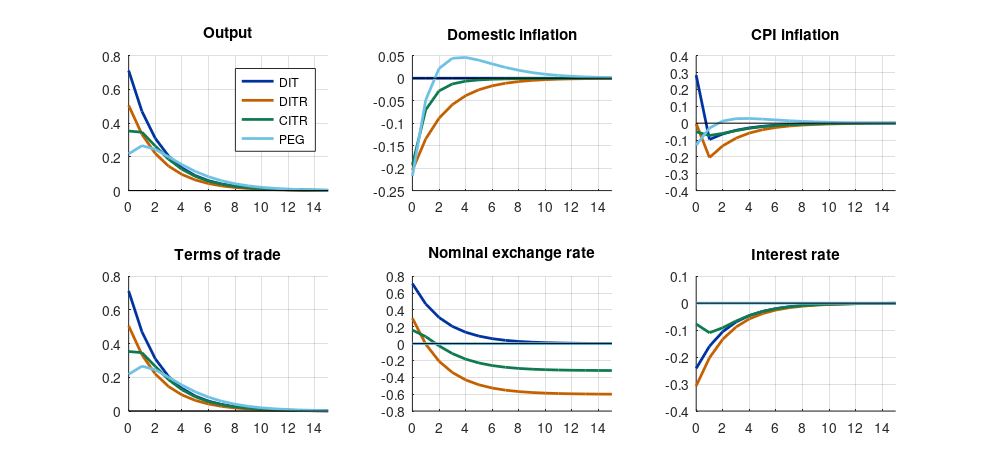

Step 1The question and the model
Should a small open economy target domestic inflation, CPI inflation, or the exchange rate? Many emerging-market central banks face exactly this choice. Galí and Monacelli (2005) answered it in a New Keynesian model in which home and foreign goods are imperfect substitutes and the home economy is too small to affect the rest of the world.
With the parameter values of Cole and Obstfeld (unit elasticities, \(\sigma = \eta = \gamma = 1\)), the log-linear model reduces to:
where \(\tilde y_t = y_t - \bar y^n_t\) is the output gap, \(\bar y^n_t = \Gamma_a a_t\) natural output driven by domestic productivity \(a_t\), \(\bar r^n_t = -\sigma_\alpha \Gamma_a (1-\rho_a) a_t\) the natural rate, \(\alpha\) the degree of openness, and \(\kappa_\alpha = \lambda(\sigma_\alpha + \varphi)\).
Four regimes are compared:
| Regime | Rule |
|---|---|
| DIT | Strict domestic-inflation targeting: \(\pi_{H,t} = 0\), the optimal policy in this model |
| DITR | Domestic-inflation Taylor rule: \(i_t = \phi_\pi \pi_{H,t}\) |
| CITR | CPI-inflation Taylor rule: \(i_t = \phi_\pi \pi_t\) |
| PEG | Fixed exchange rate: \(e_t = 0\) |
Why one model file with a switch
The regimes differ in one equation. Writing four files invites inconsistencies. Dynare's macro language (@#if, @#define) keeps one file and selects the rule at run time: dynare soe -DRULE=2.
Step 2Write the model in Dynare
// Galí-Monacelli (2005) small open economy, Cole-Obstfeld case. Quarterly rates in percent.
@#ifndef RULE
@#define RULE = 1
@#endif
var x y yn pih pi s e i a rrn;
varexo eps_a;
parameters beta alpha theta varphi phi_pi rho_a sigma_a lambda kappa_a Gamma_a;
beta = 0.99; alpha = 0.4; theta = 0.75; varphi = 3; phi_pi = 1.5; rho_a = 0.66;
sigma_a = 1; // sigma/((1-alpha)+alpha*omega) = 1 in the Cole-Obstfeld case
lambda = (1 - theta) * (1 - beta*theta) / theta;
kappa_a = lambda * (sigma_a + varphi);
Gamma_a = (1 + varphi) / (sigma_a + varphi);
model(linear);
x = x(+1) - (1/sigma_a) * (i - pih(+1) - rrn); // IS curve
pih = beta * pih(+1) + kappa_a * x; // domestic Phillips curve
x = y - yn; // output gap
yn = Gamma_a * a; // natural output
rrn = -sigma_a * Gamma_a * (1 - rho_a) * a; // natural real rate
s = sigma_a * y; // terms of trade
pi = pih + alpha * (s - s(-1)); // CPI inflation
e - e(-1) = s - s(-1) + pih; // nominal exchange rate
a = rho_a * a(-1) + eps_a; // domestic productivity
@#if RULE == 0
pih = 0; // strict domestic-inflation targeting (the optimum)
@#elseif RULE == 1
i = phi_pi * pih; // DITR
@#elseif RULE == 2
i = phi_pi * pi; // CITR
@#else
e = 0; // PEG
@#endif
end;
shocks;
var eps_a; stderr 0.712; // percent, as in Galí-Monacelli
end;
steady;
check;
stoch_simul(order=1, irf=16, nograph) y pih pi s e i x;dynare soe
Normalization failed with cutoff, trying symbolic normalization...
Could not normalize the static model. Variable e is not in the maximum cardinality matching.
STEADY-STATE RESULTS:
x 0
y 0
yn 0
pih 0
pi 0
s 0
e 0
i 0
a 0
rrn 0
EIGENVALUES:
Modulus Real Imaginary
0 0 0
0.66 0.66 0
1 1 0
1.237 1.178 0.3762
1.237 1.178 -0.3762
There are 2 eigenvalue(s) larger than 1 in modulus for 2 forward-looking variable(s)
The rank condition is verified.
MODEL SUMMARY
Number of variables: 10
Number of stochastic shocks: 1
Number of state variables: 3
Number of jumpers: 2
Number of static variables: 5
MATRIX OF COVARIANCE OF EXOGENOUS SHOCKS
Variables eps_a
eps_a 0.506944How to read it
The default run uses the domestic-inflation rule (RULE = 1). The model is determinate. Note how the exchange rate enters: the level e appears with a lag, so it is a state variable, and under the peg it is pinned at zero.
Step 3Impulse responses under the three regimes
names = {'DIT', 'DITR', 'CITR', 'PEG'};
vars = {'y', 'pih', 'pi', 's', 'e', 'i'};
titles = {'Output', 'Domestic inflation', 'CPI inflation', 'Terms of trade', 'Nominal exchange rate', 'Interest rate'};
R = struct();
for r = 1:4
clear functions; % Octave caches the compiled model; clear it before re-running
evalc(sprintf('dynare soe noclearall nograph nolog -DRULE=%d', r - 1)); % run quietly
for v = 1:numel(vars), R(r).(vars{v}) = oo_.irfs.([vars{v} '_eps_a']); end
R(r).sd = sqrt(diag(oo_.var))'; R(r).x = oo_.irfs.x_eps_a;
end
f = figure('position', [0 0 900 420]);
for v = 1:numel(vars)
subplot(2, 3, v); hold on;
for r = 1:4, plot(0:15, R(r).(vars{v})); end
plot([0 15], [0 0], 'k-', 'linewidth', 0.5); title(titles{v}); grid on; xlim([0 15]);
if v == 1, legend(names, 'location', 'northeast'); end
end
print(f, '-dpng', '-r110', 'irf.png');Normalization failed with cutoff, trying symbolic normalization... Could not normalize the static model. Variable e is not in the maximum cardinality matching. Normalization failed with cutoff, trying symbolic normalization... Could not normalize the static model. Variable e is not in the maximum cardinality matching. Normalization failed with cutoff, trying symbolic normalization... Could not normalize the static model. Variable e is not in the maximum cardinality matching.

How to read it
A domestic productivity improvement lowers home production costs and raises natural output.
- DIT (the optimum). Domestic inflation stays at zero and output rises one-for-one with its natural level. The interest rate falls with the natural rate and the currency depreciates: the terms of trade worsen so that foreigners buy the extra home output. The exchange rate does all the adjusting, as it would with flexible prices.
- DITR. The simple rule cuts the rate too little, so output rises by less than its natural level, the output gap is negative and domestic inflation falls.
- CITR. CPI inflation includes the rise in import prices from the depreciation, so it falls less than domestic inflation and the central bank cuts the rate even less at first. Output rises less, but the gap closes faster.
- PEG. The nominal exchange rate cannot move, so the relative price must adjust through sticky domestic prices. Domestic inflation falls and the adjustment is slow.
Step 4Volatility and welfare
eps = 6; % elasticity of substitution between goods
lam = (1 - 0.75) * (1 - 0.99*0.75) / 0.75;
fprintf('%-6s %8s %8s %8s %8s %8s %8s %10s\n', '', 'sd(y)', 'sd(piH)', 'sd(pi)', 'sd(s)', 'sd(e)', 'sd(i)', 'loss');
for r = 1:4
sd = R(r).sd; % order: y pih pi s e i x
loss = (1 - 0.4)/2 * ((eps/lam) * sd(2)^2 + (1 + 3) * sd(7)^2);
fprintf('%-6s %8.3f %8.3f %8.3f %8.3f %8.3f %8.3f %10.4f\n', names{r}, sd(1:6), loss);
endsd(y) sd(piH) sd(pi) sd(s) sd(e) sd(i) loss DIT 0.948 0.000 0.313 0.948 NaN 0.322 0.0000 DITR 0.673 0.272 0.271 0.673 NaN 0.408 1.6460 CITR 0.615 0.208 0.124 0.615 NaN 0.186 1.0808 PEG 0.518 0.241 0.145 0.518 0.000 0.000 1.5709
How to read it
The table follows Table 1 of Galí and Monacelli (2005). The welfare loss is their second-order approximation to household welfare, which penalises domestic-inflation variance (price dispersion) and output-gap variance:
- The optimum. Strict domestic-inflation targeting has zero loss: it reproduces the flexible-price allocation. Every simple rule falls short of it.
- Among the simple rules, the CPI rule does best in this calibration and the domestic-inflation Taylor rule worst, with the peg close to it. The ranking of simple rules is not universal: it depends on the response coefficient, the shock process and the degree of openness. Re-run the comparison under your own calibration rather than quoting a ranking.
- The exchange rate has a unit root under the floating regimes (its level drifts after every shock), so its unconditional standard deviation is infinite and Dynare reports
NaN. Under the peg it is zero by construction. - Caveat. These results rest on the Cole–Obstfeld assumptions, complete risk sharing and the absence of foreign-currency debt. Emerging-market models with currency mismatch or imported-input costs can change them substantially.
Step 5Write the paper
How to write it: results
Figure 1 compares the responses to a domestic productivity shock under three monetary regimes. Under domestic-inflation targeting, the nominal exchange rate depreciates and the terms of trade adjust, leaving domestic inflation and the output gap nearly unchanged. Under an exchange-rate peg, the adjustment of relative prices must occur through sticky domestic prices, generating larger fluctuations in domestic inflation and the output gap. Strict domestic-inflation targeting replicates the flexible-price allocation and is optimal. Among simple rules, a CPI-inflation Taylor rule yields a smaller welfare loss than a domestic-inflation Taylor rule or a peg in our calibration.
Common mistakes
- Writing the Phillips curve in CPI inflation. Firms set domestic prices; CPI inflation follows from the definition.
- Forgetting that the exchange-rate level is a state variable once a peg is possible.
- Ranking regimes by the volatility of the variables they target. Rank them by a welfare criterion.
- Using the Cole–Obstfeld special case and then generalising the ranking to economies with incomplete markets or dollar debt.